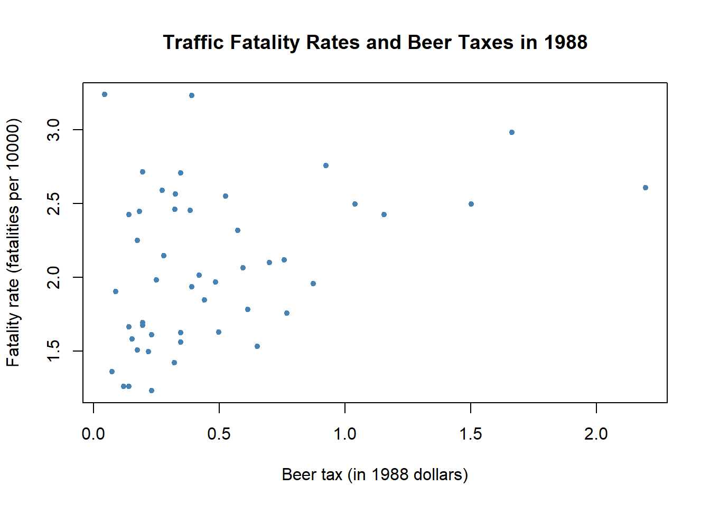

17 Panel Data 2: Implementation in R
17.1 Preliminary:
- I use the following package
lfepackage.
17.2 Panel Data Regression
- I use the dataset
FatalitiesinAERpackage.
library(AER)## 要求されたパッケージ car をロード中です## 要求されたパッケージ carData をロード中です## 要求されたパッケージ lmtest をロード中です## 要求されたパッケージ zoo をロード中です##
## 次のパッケージを付け加えます: 'zoo'## 以下のオブジェクトは 'package:base' からマスクされています:
##
## as.Date, as.Date.numeric## 要求されたパッケージ sandwich をロード中です## 要求されたパッケージ survival をロード中ですdata(Fatalities)
str(Fatalities)## 'data.frame': 336 obs. of 34 variables:
## $ state : Factor w/ 48 levels "al","az","ar",..: 1 1 1 1 1 1 1 2 2 2 ...
## $ year : Factor w/ 7 levels "1982","1983",..: 1 2 3 4 5 6 7 1 2 3 ...
## $ spirits : num 1.37 1.36 1.32 1.28 1.23 ...
## $ unemp : num 14.4 13.7 11.1 8.9 9.8 ...
## $ income : num 10544 10733 11109 11333 11662 ...
## $ emppop : num 50.7 52.1 54.2 55.3 56.5 ...
## $ beertax : num 1.54 1.79 1.71 1.65 1.61 ...
## $ baptist : num 30.4 30.3 30.3 30.3 30.3 ...
## $ mormon : num 0.328 0.343 0.359 0.376 0.393 ...
## $ drinkage : num 19 19 19 19.7 21 ...
## $ dry : num 25 23 24 23.6 23.5 ...
## $ youngdrivers: num 0.212 0.211 0.211 0.211 0.213 ...
## $ miles : num 7234 7836 8263 8727 8953 ...
## $ breath : Factor w/ 2 levels "no","yes": 1 1 1 1 1 1 1 1 1 1 ...
## $ jail : Factor w/ 2 levels "no","yes": 1 1 1 1 1 1 1 2 2 2 ...
## $ service : Factor w/ 2 levels "no","yes": 1 1 1 1 1 1 1 2 2 2 ...
## $ fatal : int 839 930 932 882 1081 1110 1023 724 675 869 ...
## $ nfatal : int 146 154 165 146 172 181 139 131 112 149 ...
## $ sfatal : int 99 98 94 98 119 114 89 76 60 81 ...
## $ fatal1517 : int 53 71 49 66 82 94 66 40 40 51 ...
## $ nfatal1517 : int 9 8 7 9 10 11 8 7 7 8 ...
## $ fatal1820 : int 99 108 103 100 120 127 105 81 83 118 ...
## $ nfatal1820 : int 34 26 25 23 23 31 24 16 19 34 ...
## $ fatal2124 : int 120 124 118 114 119 138 123 96 80 123 ...
## $ nfatal2124 : int 32 35 34 45 29 30 25 36 17 33 ...
## $ afatal : num 309 342 305 277 361 ...
## $ pop : num 3942002 3960008 3988992 4021008 4049994 ...
## $ pop1517 : num 209000 202000 197000 195000 204000 ...
## $ pop1820 : num 221553 219125 216724 214349 212000 ...
## $ pop2124 : num 290000 290000 288000 284000 263000 ...
## $ milestot : num 28516 31032 32961 35091 36259 ...
## $ unempus : num 9.7 9.6 7.5 7.2 7 ...
## $ emppopus : num 57.8 57.9 59.5 60.1 60.7 ...
## $ gsp : num -0.0221 0.0466 0.0628 0.0275 0.0321 ...- As a preliminary analysis, let’s plot the relationship between fatality rate and beer tax in 1998.
library("dplyr")##
## 次のパッケージを付け加えます: 'dplyr'## 以下のオブジェクトは 'package:car' からマスクされています:
##
## recode## 以下のオブジェクトは 'package:stats' からマスクされています:
##
## filter, lag## 以下のオブジェクトは 'package:base' からマスクされています:
##
## intersect, setdiff, setequal, unionFatalities %>%
mutate(fatal_rate = fatal / pop * 10000) %>%
filter(year == "1988") -> data
plot(x = data$beertax,
y = data$fatal_rate,
xlab = "Beer tax (in 1988 dollars)",
ylab = "Fatality rate (fatalities per 10000)",
main = "Traffic Fatality Rates and Beer Taxes in 1988",
pch = 20,
col = "steelblue")
Positive correlation between alcohol tax and traffic accident. Possibly due to omitted variable bias.
- Run fixed effect regression using
felmcommand inlfepackage.
library("lfe")## Warning: パッケージ 'lfe' はバージョン 3.5.2 の R の下で造られました## 要求されたパッケージ Matrix をロード中です##
## 次のパッケージを付け加えます: 'lfe'## 以下のオブジェクトは 'package:lmtest' からマスクされています:
##
## waldtestFatalities %>%
mutate(fatal_rate = fatal / pop * 10000) -> data
# OLS
result_ols <- felm( fatal_rate ~ beertax | 0 | 0 | 0, data = data )
summary(result_ols, robust = TRUE)##
## Call:
## felm(formula = fatal_rate ~ beertax | 0 | 0 | 0, data = data)
##
## Residuals:
## Min 1Q Median 3Q Max
## -1.09060 -0.37768 -0.09436 0.28548 2.27643
##
## Coefficients:
## Estimate Robust s.e t value Pr(>|t|)
## (Intercept) 1.85331 0.04713 39.324 < 0.0000000000000002 ***
## beertax 0.36461 0.05285 6.899 0.0000000000264 ***
## ---
## Signif. codes: 0 '***' 0.001 '**' 0.01 '*' 0.05 '.' 0.1 ' ' 1
##
## Residual standard error: 0.5437 on 334 degrees of freedom
## Multiple R-squared(full model): 0.09336 Adjusted R-squared: 0.09065
## Multiple R-squared(proj model): 0.09336 Adjusted R-squared: 0.09065
## F-statistic(full model, *iid*):34.39 on 1 and 334 DF, p-value: 0.00000001082
## F-statistic(proj model): 47.59 on 1 and 334 DF, p-value: 0.00000000002643# State FE
result_stateFE <- felm( fatal_rate ~ beertax | state | 0 | state, data = data )
summary(result_stateFE, robust = TRUE)##
## Call:
## felm(formula = fatal_rate ~ beertax | state | 0 | state, data = data)
##
## Residuals:
## Min 1Q Median 3Q Max
## -0.58696 -0.08284 -0.00127 0.07955 0.89780
##
## Coefficients:
## Estimate Cluster s.e. t value Pr(>|t|)
## beertax -0.6559 0.3148 -2.083 0.0381 *
## ---
## Signif. codes: 0 '***' 0.001 '**' 0.01 '*' 0.05 '.' 0.1 ' ' 1
##
## Residual standard error: 0.1899 on 287 degrees of freedom
## Multiple R-squared(full model): 0.905 Adjusted R-squared: 0.8891
## Multiple R-squared(proj model): 0.04074 Adjusted R-squared: -0.1197
## F-statistic(full model, *iid*):56.97 on 48 and 287 DF, p-value: < 0.00000000000000022
## F-statistic(proj model): 4.34 on 1 and 47 DF, p-value: 0.0427# State and Year FE
result_bothFE <- felm( fatal_rate ~ beertax | state + year | 0 | state, data = data )
summary(result_bothFE, robust = TRUE)##
## Call:
## felm(formula = fatal_rate ~ beertax | state + year | 0 | state, data = data)
##
## Residuals:
## Min 1Q Median 3Q Max
## -0.59556 -0.08096 0.00143 0.08234 0.83883
##
## Coefficients:
## Estimate Cluster s.e. t value Pr(>|t|)
## beertax -0.6400 0.3858 -1.659 0.0983 .
## ---
## Signif. codes: 0 '***' 0.001 '**' 0.01 '*' 0.05 '.' 0.1 ' ' 1
##
## Residual standard error: 0.1879 on 281 degrees of freedom
## Multiple R-squared(full model): 0.9089 Adjusted R-squared: 0.8914
## Multiple R-squared(proj model): 0.03606 Adjusted R-squared: -0.1492
## F-statistic(full model, *iid*):51.93 on 54 and 281 DF, p-value: < 0.00000000000000022
## F-statistic(proj model): 2.752 on 1 and 47 DF, p-value: 0.1038stargazer::stargazer(result_ols, result_stateFE, result_bothFE, type = "text")##
## ======================================================================
## Dependent variable:
## --------------------------------------------------
## fatal_rate
## (1) (2) (3)
## ----------------------------------------------------------------------
## beertax 0.365*** -0.656** -0.640*
## (0.062) (0.315) (0.386)
##
## Constant 1.853***
## (0.044)
##
## ----------------------------------------------------------------------
## Observations 336 336 336
## R2 0.093 0.905 0.909
## Adjusted R2 0.091 0.889 0.891
## Residual Std. Error 0.544 (df = 334) 0.190 (df = 287) 0.188 (df = 281)
## ======================================================================
## Note: *p<0.1; **p<0.05; ***p<0.01- What if we do not use the cluster-robust standard error?
# State FE w.o. CRS
result_wo_CRS <- felm( fatal_rate ~ beertax | state | 0 | 0, data = data )
# State FE w. CRS
result_w_CRS <- felm( fatal_rate ~ beertax | state | 0 | state, data = data )
# Report heteroskedasticity robust standard error and cluster-robust standard errors
stargazer::stargazer(result_wo_CRS, result_w_CRS, type = "text", se = list(summary(result_wo_CRS)$rse, NULL))##
## ===========================================================
## Dependent variable:
## ----------------------------
## fatal_rate
## (1) (2)
## -----------------------------------------------------------
## beertax -0.656*** -0.656**
## (0.190) (0.315)
##
## -----------------------------------------------------------
## Observations 336 336
## R2 0.905 0.905
## Adjusted R2 0.889 0.889
## Residual Std. Error (df = 287) 0.190 0.190
## ===========================================================
## Note: *p<0.1; **p<0.05; ***p<0.0117.3 Panel Data with Instrumental Variables
- Revisit the demand for Cigaretts
- Consider the following model \[
\log (Q_{it}) = \beta_0 + \beta_1 \log (P_{it}) + \beta_2 \log(income_{it}) + u_i + e_{it}
\] where
- \(Q_{it}\) is the number of packs per capita in state \(i\) in year \(t\),
- \(P_{it}\) is the after-tax average real price per pack of cigarettes, and
- \(income_{it}\) is the real income per capita. This is demand shifter.
- As an IV for the price, we use the followings:
- \(SalesTax_{it}\): the proportion of taxes on cigarettes arising from the general sales tax.
- Relevant as it is included in the after-tax price
- Exogenous(indepndent) since the sales tax does not influence demand directly, but indirectly through the price.
- \(CigTax_{it}\): the cigarett-specific taxes
- \(SalesTax_{it}\): the proportion of taxes on cigarettes arising from the general sales tax.
# load the data set and get an overview
library(AER)
data("CigarettesSW")
CigarettesSW %>%
mutate( rincome = (income / population) / cpi) %>%
mutate( rprice = price / cpi ) %>%
mutate( salestax = (taxs - tax) / cpi ) %>%
mutate( cigtax = tax/cpi ) -> Cigdata- Run IV regression with panel data.
# OLS
result_1 <- felm( log(packs) ~ log(rprice) + log(rincome) | 0 | 0 | state, data = Cigdata )
# State FE
result_2 <- felm( log(packs) ~ log(rprice) + log(rincome) | state | 0 | state, data = Cigdata )
# IV without FE
result_3 <- felm( log(packs) ~ log(rincome) | 0 | (log(rprice) ~ salestax + cigtax) | state, data = Cigdata )
# IV with FE
result_4 <- felm( log(packs) ~ log(rincome) | state | (log(rprice) ~ salestax + cigtax) | state, data = Cigdata )
stargazer::stargazer(result_1, result_2, result_3, result_4, type = "text")##
## ===================================================================================
## Dependent variable:
## ---------------------------------------------------------------
## log(packs)
## (1) (2) (3) (4)
## -----------------------------------------------------------------------------------
## log(rprice) -1.334*** -1.210***
## (0.174) (0.203)
##
## log(rincome) 0.318 0.121 0.257 0.204
## (0.212) (0.310) (0.204) (0.338)
##
## `log(rprice)(fit)` -1.229*** -1.268***
## (0.183) (0.231)
##
## Constant 10.067*** 9.736***
## (0.464) (0.555)
##
## -----------------------------------------------------------------------------------
## Observations 96 96 96 96
## R2 0.552 0.966 0.549 0.966
## Adjusted R2 0.542 0.929 0.539 0.929
## Residual Std. Error 0.165 (df = 93) 0.065 (df = 46) 0.165 (df = 93) 0.065 (df = 46)
## ===================================================================================
## Note: *p<0.1; **p<0.05; ***p<0.0117.4 Some tips in felm command
17.4.1 How to report heteroskedasticity robust standard error in stargazer
# Run felm command without specifying cluster.
result_1 <- felm( log(packs) ~ log(rprice) + log(rincome) | 0 | 0 | state, data = Cigdata )
# `result_1$rse` contains heteroskedasticity robust standard error. Put this into `se` option in `stargazer`.
stargazer::stargazer(result_1, type = "text",
se = list(result_1$rse ) ) ##
## ===============================================
## Dependent variable:
## ---------------------------
## log(packs)
## -----------------------------------------------
## log(rprice) -1.334***
## (0.154)
##
## log(rincome) 0.318**
## (0.154)
##
## Constant 10.067***
## (0.502)
##
## -----------------------------------------------
## Observations 96
## R2 0.552
## Adjusted R2 0.542
## Residual Std. Error 0.165 (df = 93)
## ===============================================
## Note: *p<0.1; **p<0.05; ***p<0.0117.4.2 How to conduct F test after felm
# Run felm command without specifying cluster.
result_1 <- felm( packs ~ rprice + rincome | 0 | 0 | 0, data = Cigdata )
# The following tests H0: _b[rincome] = 0 & _b[rprice] = 0
ftest1 = waldtest(result_1, ~ rincome | rprice )
ftest1 ## p chi2
## 0.0000000000000000000004180596 98.4528366392834328735261806287
## df1 p.F
## 2.0000000000000000000000000000 0.0000000000000026217009797120
## F df2
## 49.2264183196417164367630903143 93.0000000000000000000000000000
## attr(,"formula")
## ~rincome | rprice
## <environment: 0x0000000022268530># ftest[5] corresponds to F-value
fval1 = ftest1[5]
# The following tests H0: _b[rincome] - 1 = 0 & _b[rprice] = 0
ftest2 = waldtest(result_1, ~ rincome - 1 | rprice )
ftest2 ## p chi2
## 0.000000000000000000000002048665 109.089707794080325697905209381133
## df1 p.F
## 2.000000000000000000000000000000 0.000000000000000212154377173804
## F df2
## 54.544853897040162848952604690567 93.000000000000000000000000000000
## attr(,"formula")
## ~rincome - 1 | rprice
## <environment: 0x000000002245a918># ftest[5] corresponds to F-value
fval2 = ftest1[5]